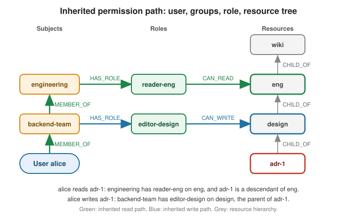

Graph-Based Access Control
|
This content was generated with the assistance of AI and should be verified against the official documentation before being relied on in production. |
Role-based access control stops being simple when groups nest, roles are granted on folders instead of single documents, and the question is no longer "does this user have the role EDITOR" but "may this user write this document, given every group they belong to, directly or indirectly, and every folder above the document". Those are path questions, and a graph database answers them with one pattern instead of a recursive join. This page builds such an authorization service in Spring Boot: the model, the schema, the permission check, the integration with Spring Security, a paged "everything this user can access" query, a decision cache and its invalidation, and a test against a real server.
Problem
Three properties of real permission systems are awkward in a relational schema and natural in a graph:
-
Inherited membership. A user belongs to a team, the team belongs to a department, the department belongs to a company group. A grant to the department reaches every member of every nested team.
-
Inherited resources. A grant on a folder reaches every document below it, at any depth.
-
Explainability. The answer to "why can Alice read this" is a path through the graph, which can be returned to an administrator as it is.
The query that expresses both inheritances is a variable-length path match. The concepts behind it (paths, variable
length patterns, bounded traversal) are explained in the
Neo4j Reference use cases, whose identity and access
section deals with deduplicating identities; the permission model below is a separate, small dataset defined on this
page. The Spring Data Neo4j mapping and Neo4jClient basics are in
Spring Data Neo4j; Spring Security itself is in
Spring Security. Neither is repeated here.
The graph is read mostly: permission checks happen on every request, while memberships and grants change rarely. That shapes the design: a fast, bounded read query; a cache in front of it; and an explicit invalidation on the few writes.
Graph model
(:User)-[:MEMBER_OF]->(:Group)-[:MEMBER_OF]->(:Group)
(:User|:Group)-[:HAS_ROLE]->(:Role)
(:Role)-[:CAN_READ|CAN_WRITE]->(:Resource)
(:Resource)-[:CHILD_OF]->(:Resource)The notation is the pattern syntax described in
Cypher manual — Patterns. A role is a named bundle of grants. A subject (a user or a group) holds roles, a role grants a permission on a
resource, and the grant covers the resource and all its descendants. A group that is a MEMBER_OF another group passes
its roles on to its own members. The dataset used on this page is small enough to hold in mind:
| Element | Content |
|---|---|
Users |
|
Groups |
|
Membership |
|
Roles |
|
Role holders |
|
Grants |
|
Resources |
|

The figure shows why Alice reads adr-1: she is in backend-team, which is in engineering, which holds
reader-eng, which can read eng, and adr-1 sits below eng. She also writes adr-1, through the role of her own
team on design. Bob reads it through the same role but cannot write it, and Carol, whose only group has no role,
reaches nothing.
The mapping uses the standard Spring Data Neo4j annotations. Business keys are the identifiers, so the same data can be
reloaded or merged without generated ids. @RelationshipProperties carries the data that belongs to the relationship
itself (when a membership started, who granted a permission):
import java.time.LocalDate;
import java.util.ArrayList;
import java.util.List;
import org.springframework.data.annotation.PersistenceCreator;
import org.springframework.data.neo4j.core.schema.Id;
import org.springframework.data.neo4j.core.schema.Node;
import org.springframework.data.neo4j.core.schema.Relationship;
import org.springframework.data.neo4j.core.schema.RelationshipProperties;
import org.springframework.data.neo4j.core.schema.TargetNode;
@Node("User")
public class AccessUser {
@Id
private final String username;
private final String displayName;
@Relationship(type = "MEMBER_OF", direction = Relationship.Direction.OUTGOING)
private final List<Membership> memberships;
@Relationship(type = "HAS_ROLE", direction = Relationship.Direction.OUTGOING)
private final List<Role> roles;
@PersistenceCreator
public AccessUser(String username, String displayName, List<Membership> memberships, List<Role> roles) {
this.username = username;
this.displayName = displayName;
this.memberships = memberships == null ? new ArrayList<>() : memberships;
this.roles = roles == null ? new ArrayList<>() : roles;
}
public String username() { return username; }
public String displayName() { return displayName; }
public List<Membership> memberships() { return memberships; }
public List<Role> roles() { return roles; }
}
@Node("Group")
public class AccessGroup {
@Id
private final String name;
/** A group that is a member of another group passes its roles on to its own members. */
@Relationship(type = "MEMBER_OF", direction = Relationship.Direction.OUTGOING)
private final List<Membership> parents;
@Relationship(type = "HAS_ROLE", direction = Relationship.Direction.OUTGOING)
private final List<Role> roles;
@PersistenceCreator
public AccessGroup(String name, List<Membership> parents, List<Role> roles) {
this.name = name;
this.parents = parents == null ? new ArrayList<>() : parents;
this.roles = roles == null ? new ArrayList<>() : roles;
}
public String name() { return name; }
public List<Membership> parents() { return parents; }
public List<Role> roles() { return roles; }
}
@RelationshipProperties
public class Membership {
private final LocalDate since;
@TargetNode
private final AccessGroup group;
public Membership(LocalDate since, AccessGroup group) {
this.since = since;
this.group = group;
}
public LocalDate since() { return since; }
public AccessGroup group() { return group; }
}See Spring Data Neo4j — reference guide for the mapping annotations, and the mapping sections of Spring Data Neo4j for relationship properties and persistence constructors.
Roles and resources follow the same pattern. The two permission relationships are separate types, so each has its own list and its own relationship-properties class:
@Node("Role")
public class Role {
@Id
private final String name;
@Relationship(type = "CAN_READ", direction = Relationship.Direction.OUTGOING)
private final List<Grant> reads;
@Relationship(type = "CAN_WRITE", direction = Relationship.Direction.OUTGOING)
private final List<Grant> writes;
@PersistenceCreator
public Role(String name, List<Grant> reads, List<Grant> writes) {
this.name = name;
this.reads = reads == null ? new ArrayList<>() : reads;
this.writes = writes == null ? new ArrayList<>() : writes;
}
public String name() { return name; }
public List<Grant> reads() { return reads; }
public List<Grant> writes() { return writes; }
}
@RelationshipProperties
public class Grant {
private final LocalDate grantedOn;
@TargetNode
private final Resource resource;
public Grant(LocalDate grantedOn, Resource resource) {
this.grantedOn = grantedOn;
this.resource = resource;
}
public LocalDate grantedOn() { return grantedOn; }
public Resource resource() { return resource; }
}
@Node("Resource")
public class Resource {
@Id
private final String id;
private final String name;
/** The parent folder; the root resource has none. */
@Relationship(type = "CHILD_OF", direction = Relationship.Direction.OUTGOING)
private final Resource parent;
@PersistenceCreator
public Resource(String id, String name, Resource parent) {
this.id = id;
this.name = name;
this.parent = parent;
}
public String id() { return id; }
public String name() { return name; }
public Resource parent() { return parent; }
}
public interface ResourceRepository extends Neo4jRepository<Resource, String> {
}See Spring Data Neo4j — reference guide for repositories and
@Node. The entities are used to administer the graph and load small neighbourhoods; the permission check itself is a
Cypher query, because a derived query cannot express a variable-length path of unknown depth over two relationship
families, and a mapped entity would load the whole reachable subgraph just to answer a yes or no.
Schema
Every lookup in the permission query starts from a key (username, id), so each key needs a uniqueness constraint,
which also creates the supporting index. Spring Data Neo4j does not create the schema, so the application does it at
startup with idempotent IF NOT EXISTS statements:
@Component
public class AccessSchemaInitializer implements ApplicationRunner {
private static final List<String> STATEMENTS = List.of(
"CREATE CONSTRAINT user_username IF NOT EXISTS FOR (u:User) REQUIRE u.username IS UNIQUE",
"CREATE CONSTRAINT group_name IF NOT EXISTS FOR (g:Group) REQUIRE g.name IS UNIQUE",
"CREATE CONSTRAINT role_name IF NOT EXISTS FOR (r:Role) REQUIRE r.name IS UNIQUE",
"CREATE CONSTRAINT resource_id IF NOT EXISTS FOR (r:Resource) REQUIRE r.id IS UNIQUE");
private final Neo4jClient client;
public AccessSchemaInitializer(Neo4jClient client) {
this.client = client;
}
@Override
public void run(ApplicationArguments args) {
STATEMENTS.forEach(statement -> client.query(statement).run());
}
}See Cypher manual — Managing constraints
and Spring Boot — Using the ApplicationRunner.
Schema statements run outside a data transaction, which is why this is a separate runner and not part of a
@Transactional service. A larger project would move the same statements into a migration tool; the trade-offs are in
Indexes and Constraints.
Writes
Administrative changes are a handful of MERGE statements. They are idempotent, so a retried request cannot create a
second membership, and each publishes an event that the cache layer (below) listens to after the commit:
public record AccessChanged(String reason) {
}
@Service
public class AccessAdminService {
private final Neo4jClient client;
private final ApplicationEventPublisher events;
public AccessAdminService(Neo4jClient client, ApplicationEventPublisher events) {
this.client = client;
this.events = events;
}
@Transactional
public void addUserToGroup(String username, String group) {
client.query("""
MATCH (u:User {username: $username}), (g:Group {name: $group})
MERGE (u)-[m:MEMBER_OF]->(g)
ON CREATE SET m.since = date()
""")
.bind(username).to("username")
.bind(group).to("group")
.run();
events.publishEvent(new AccessChanged("member added: " + username + " to " + group));
}
@Transactional
public void removeUserFromGroup(String username, String group) {
client.query("""
MATCH (:User {username: $username})-[m:MEMBER_OF]->(:Group {name: $group})
DELETE m
""")
.bind(username).to("username")
.bind(group).to("group")
.run();
events.publishEvent(new AccessChanged("member removed: " + username + " from " + group));
}
@Transactional
public void nestGroup(String child, String parent) {
client.query("""
MATCH (c:Group {name: $child}), (p:Group {name: $parent})
MERGE (c)-[m:MEMBER_OF]->(p)
ON CREATE SET m.since = date()
""")
.bind(child).to("child")
.bind(parent).to("parent")
.run();
events.publishEvent(new AccessChanged("group nested: " + child + " in " + parent));
}
@Transactional
public void grantRole(String role, Permission permission, String resourceId) {
// the relationship type comes from a closed enum, never from user input
client.query("""
MATCH (r:Role {name: $role}), (res:Resource {id: $resourceId})
MERGE (r)-[g:%s]->(res)
ON CREATE SET g.grantedOn = date()
""".formatted(permission.grantType()))
.bind(role).to("role")
.bind(resourceId).to("resourceId")
.run();
events.publishEvent(new AccessChanged("grant: " + role + " " + permission + " on " + resourceId));
}
}See Cypher manual — MERGE and
Spring Framework — Using @Transactional.
A relationship type cannot be a Cypher parameter, so grantRole builds the statement from the Permission enum
defined in the next section; building it from a request string would be a Cypher injection hole.
Queries and analytics
The permission check
The enum fixes the two permission levels and the relationship pattern each one accepts. A write grant implies read access, so reading accepts both types:
public enum Permission {
READ("CAN_READ|CAN_WRITE", "CAN_READ"),
WRITE("CAN_WRITE", "CAN_WRITE");
private final String checkTypes;
private final String grantType;
Permission(String checkTypes, String grantType) {
this.checkTypes = checkTypes;
this.grantType = grantType;
}
/** Relationship types accepted when checking this permission. */
public String checkTypes() { return checkTypes; }
/** The single relationship type created when granting this permission. */
public String grantType() { return grantType; }
}See Cypher manual — Patterns
for the A|B relationship type alternation used in the pattern strings. The check is an existential subquery over a
variable-length path in three stages: climb the membership chain from the user, take any role the user or an ancestor
group holds, and match a grant on the requested resource or any of its ancestors:
@Repository
public class PermissionQueries {
private static final String CHECK = """
MATCH (u:User {username: $username})
RETURN EXISTS {
MATCH (u)-[:MEMBER_OF*0..10]->(:User|Group)-[:HAS_ROLE]->(:Role)-[:%s]->(:Resource)
<-[:CHILD_OF*0..20]-(:Resource {id: $resourceId})
} AS allowed
""";
private final Neo4jClient client;
public PermissionQueries(Neo4jClient client) {
this.client = client;
}
@Transactional(readOnly = true)
public boolean isAllowed(String username, Permission permission, String resourceId) {
return client.query(CHECK.formatted(permission.checkTypes()))
.bind(username).to("username")
.bind(resourceId).to("resourceId")
.fetchAs(Boolean.class)
.mappedBy((typeSystem, record) -> record.get("allowed").asBoolean())
.one()
.orElse(false);
}
}See Cypher manual — EXISTS subqueries and Cypher manual — Variable-length patterns. Four details carry the design:
-
MEMBER_OF*0..10includes length zero, so a role held directly by the user counts, and the upper bound limits the traversal on a cyclic or very deep membership structure. The same applies toCHILD_OF*0..20on the resource side. -
The pattern is read from both ends: the grant node is found by walking up from the requested resource, which is cheap because the resource is bound by its unique
id. -
EXISTSstops at the first match instead of enumerating every path, and a missing user produces no row at all, whichorElse(false)turns into a deny: the default answer is "no". -
The username and resource id are parameters. Only the closed
Permissionenum is formatted into the statement.
Explaining a decision
An administrator’s question "why can she read this" is the same pattern returning the path instead of a boolean:
public record AccessExplanation(List<String> subjects, String role, String grantedOn, String permission) {
}
@Transactional(readOnly = true)
public Optional<AccessExplanation> explain(String username, Permission permission, String resourceId) {
return client.query("""
MATCH p = (u:User {username: $username})-[:MEMBER_OF*0..10]->(holder:User|Group)
-[:HAS_ROLE]->(role:Role)-[g:%s]->(grant:Resource)
<-[:CHILD_OF*0..20]-(:Resource {id: $resourceId})
RETURN [s IN nodes(p) WHERE s:User OR s:Group | coalesce(s.username, s.name)] AS subjects,
role.name AS role, grant.id AS grantedOn, type(g) AS permission
ORDER BY length(p)
LIMIT 1
""".formatted(permission.checkTypes()))
.bind(username).to("username")
.bind(resourceId).to("resourceId")
.fetchAs(AccessExplanation.class)
.mappedBy((typeSystem, record) -> new AccessExplanation(
record.get("subjects").asList(Value::asString),
record.get("role").asString(),
record.get("grantedOn").asString(),
record.get("permission").asString()))
.one();
}See Cypher manual — Shortest paths for the
related path functions, and Cypher manual — List functions
for nodes(). ORDER BY length(p) returns the shortest path, and because a write grant also allows reading, that is
not always the path through a read role. For Alice and adr-1 the explanation lists alice and backend-team, the
role editor-design and the CAN_WRITE grant on design (four hops), not the six-hop path through engineering and
reader-eng that the figure also shows. An administrator who wants every reason, not only the shortest one, drops the
LIMIT 1.
Everything a user can access, paged
A file browser needs the inverse question: which resources may this user see. The query collects the distinct grant points reachable through the user’s subjects and then walks down from each of them. Sorting by the unique id gives stable pages:
public record AccessibleResource(String id, String name) {
}
@Transactional(readOnly = true)
public Page<AccessibleResource> accessibleResources(String username, Pageable pageable) {
var rows = client.query("""
MATCH (u:User {username: $username})-[:MEMBER_OF*0..10]->(:User|Group)
-[:HAS_ROLE]->(:Role)-[:CAN_READ|CAN_WRITE]->(grant:Resource)
WITH DISTINCT grant
MATCH (r:Resource)-[:CHILD_OF*0..20]->(grant)
WITH DISTINCT r
ORDER BY r.id
SKIP $skip LIMIT $limit
RETURN r.id AS id, r.name AS name
""")
.bind(username).to("username")
.bind(pageable.getOffset()).to("skip")
.bind(pageable.getPageSize()).to("limit")
.fetchAs(AccessibleResource.class)
.mappedBy((typeSystem, record) -> new AccessibleResource(
record.get("id").asString(), record.get("name").asString()))
.all()
.stream()
.toList();
long total = client.query("""
MATCH (u:User {username: $username})-[:MEMBER_OF*0..10]->(:User|Group)
-[:HAS_ROLE]->(:Role)-[:CAN_READ|CAN_WRITE]->(grant:Resource)
WITH DISTINCT grant
MATCH (r:Resource)-[:CHILD_OF*0..20]->(grant)
RETURN count(DISTINCT r) AS total
""")
.bind(username).to("username")
.fetchAs(Long.class)
.mappedBy((typeSystem, record) -> record.get("total").asLong())
.one()
.orElse(0L);
return new PageImpl<>(rows, pageable, total);
}See Cypher manual — SKIP and
Spring Data — Paging and sorting.
SKIP pages degrade on very deep pages, because the server still computes the skipped rows; for large trees switch to
keyset pagination (WHERE r.id > $after with LIMIT) and return the last id as the next cursor.
Spring Data Neo4j can also run such queries when they are declared with @Query on a repository and return a Page
with a countQuery; the Neo4jClient form above keeps both statements next to each other and returns a small record
instead of a mapped entity tree. Because it is a read-only analysis of the stored graph, no GDS projection is needed. If
a catalogue grows to millions of resources, the same result can be materialised by a scheduled job as described in
Calling GDS from Spring Boot and
Scheduling and ShedLock.
Service and API
Cached decisions
Every secured request runs the permission check, and the graph changes rarely, so the decision is cached. The cached bean is separate from the caller, because Spring’s cache proxy does not intercept a call from the same class. The cache key is the full question:
@Service
public class PermissionService {
private final PermissionQueries queries;
public PermissionService(PermissionQueries queries) {
this.queries = queries;
}
@Cacheable(cacheNames = "graph-permissions", key = "#username + '|' + #permission + '|' + #resourceId")
public boolean isAllowed(String username, Permission permission, String resourceId) {
return queries.isAllowed(username, permission, resourceId);
}
}See Spring Framework — Cache annotations and the cache providers in Caching. The cache is a bounded Caffeine cache with a short expiry that acts as a safety net, never as the invalidation mechanism:
spring:
cache:
cache-names: graph-permissions
caffeine:
spec: maximumSize=50000,expireAfterWrite=5mSee Spring Boot — Caching. A membership or grant change can affect many users at once (adding a group to another group changes every member), so invalidation clears the whole cache. It runs after the commit; evicting before the commit would let a concurrent request repopulate the cache with the old graph:
@Component
public class PermissionCacheInvalidator {
private final CacheManager cacheManager;
public PermissionCacheInvalidator(CacheManager cacheManager) {
this.cacheManager = cacheManager;
}
@TransactionalEventListener(phase = TransactionPhase.AFTER_COMMIT, fallbackExecution = true)
public void onAccessChanged(AccessChanged event) {
var cache = cacheManager.getCache("graph-permissions");
if (cache != null) {
cache.clear();
}
}
}See Spring Framework — Transaction-bound events.
A local cache only invalidates the instance that handled the change. In a scaled-out service, either use a shared
cache (the Redis provider in Caching) or publish the AccessChanged event to a
topic and clear each instance’s cache from a consumer, as described in
Messaging with Kafka; the five-minute expiry bounds how long a missed
message can keep a stale decision.
Wiring the decision into Spring Security
The flow of a protected call is short; the proxy created by method security calls the graphAuthz bean before the
controller method runs:
The bean is an ordinary component named graphAuthz; SpEL reaches it with the @ prefix:
@Component("graphAuthz")
public class GraphAuthz {
private final PermissionService permissions;
public GraphAuthz(PermissionService permissions) {
this.permissions = permissions;
}
public boolean canRead(Authentication authentication, String resourceId) {
return check(authentication, Permission.READ, resourceId);
}
public boolean canWrite(Authentication authentication, String resourceId) {
return check(authentication, Permission.WRITE, resourceId);
}
private boolean check(Authentication authentication, Permission permission, String resourceId) {
if (authentication == null || !authentication.isAuthenticated()) {
return false;
}
return permissions.isAllowed(authentication.getName(), permission, resourceId);
}
}
@RestController
@RequestMapping("/documents")
public class DocumentController {
private final DocumentService documents;
private final PermissionQueries queries;
public DocumentController(DocumentService documents, PermissionQueries queries) {
this.documents = documents;
this.queries = queries;
}
@GetMapping("/{id}")
@PreAuthorize("@graphAuthz.canRead(authentication, #id)")
public DocumentView read(@PathVariable String id) {
return documents.read(id);
}
@PutMapping("/{id}")
@PreAuthorize("@graphAuthz.canWrite(authentication, #id)")
public DocumentView update(@PathVariable String id, @RequestBody DocumentUpdate update) {
return documents.update(id, update);
}
@GetMapping
public Page<AccessibleResource> mine(Authentication authentication, Pageable pageable) {
return queries.accessibleResources(authentication.getName(), pageable);
}
}
@Configuration
@EnableMethodSecurity
class MethodSecurityConfig {
}See Spring Security — Method Security
and the @PreAuthorize section of Spring Security. #id is the method
parameter and needs the parameter names to be compiled in, which the Spring Boot Maven and Gradle plugins already do.
The listing endpoint is not annotated: it takes the user from the Authentication and returns only what the query
allows, so no per-row check is needed. Returning 404 instead of 403 for an unreadable id avoids revealing that a
resource exists; the conventions are in REST APIs.
The same decision can be made at the request level, before the controller is even resolved, with a custom
AuthorizationManager. This keeps all rules in the filter chain and is the better fit when many endpoints share the
path variable:
@Component
public class GraphAuthorizationManager implements AuthorizationManager<RequestAuthorizationContext> {
private final PermissionService permissions;
public GraphAuthorizationManager(PermissionService permissions) {
this.permissions = permissions;
}
@Override
public AuthorizationResult authorize(Supplier<? extends Authentication> authentication,
RequestAuthorizationContext context) {
var auth = authentication.get();
var id = context.getVariables().get("id");
if (auth == null || !auth.isAuthenticated() || id == null) {
return new AuthorizationDecision(false);
}
var permission = "GET".equals(context.getRequest().getMethod()) ? Permission.READ : Permission.WRITE;
return new AuthorizationDecision(permissions.isAllowed(auth.getName(), permission, id));
}
}
@Configuration
class WebSecurityConfig {
@Bean
SecurityFilterChain filterChain(HttpSecurity http, GraphAuthorizationManager graph) throws Exception {
return http
.authorizeHttpRequests(requests -> requests
.requestMatchers("/documents/{id}").access(graph)
.anyRequest().authenticated())
.httpBasic(Customizer.withDefaults())
.build();
}
}See Spring Security — Authorize HttpServletRequests. Use one mechanism per endpoint, not both: the annotation keeps the rule beside the code it protects and works for any service method, while the manager is a single place that cannot be forgotten on a new controller.
Integration test
The test starts a real Neo4j server with the plugins used by the other pages of this section (see Calling GDS from Spring Boot for the image tag and plugin settings), loads the dataset of this page and checks allow and deny across inherited groups and nested resources. The general test setup is in Unit and Integration Testing:
import org.junit.jupiter.api.BeforeEach;
import org.junit.jupiter.api.Test;
import org.junit.jupiter.params.ParameterizedTest;
import org.junit.jupiter.params.provider.CsvSource;
import org.testcontainers.junit.jupiter.Container;
import org.testcontainers.junit.jupiter.Testcontainers;
import org.testcontainers.neo4j.Neo4jContainer;
import static org.assertj.core.api.Assertions.assertThat;
import static org.assertj.core.api.Assertions.assertThatThrownBy;
@Testcontainers
@SpringBootTest
class GraphAccessControlIT {
@Container
@ServiceConnection
static final Neo4jContainer NEO4J = new Neo4jContainer("neo4j:2026.10.1")
.withEnv("NEO4J_PLUGINS", "[\"graph-data-science\", \"apoc\"]");
private static final String DATASET = """
CREATE (alice:User {username: 'alice', displayName: 'Alice'}),
(bob:User {username: 'bob', displayName: 'Bob'}),
(carol:User {username: 'carol', displayName: 'Carol'}),
(dave:User {username: 'dave', displayName: 'Dave'}),
(eng:Group {name: 'engineering'}),
(backend:Group {name: 'backend-team'}),
(contractors:Group {name: 'contractors'}),
(readerEng:Role {name: 'reader-eng'}),
(editorDesign:Role {name: 'editor-design'}),
(hrReader:Role {name: 'hr-reader'}),
(wiki:Resource {id: 'wiki', name: 'Wiki'}),
(engDocs:Resource {id: 'eng', name: 'Engineering'}),
(design:Resource {id: 'design', name: 'Design'}),
(adr1:Resource {id: 'adr-1', name: 'ADR 1'}),
(hr:Resource {id: 'hr', name: 'HR'}),
(salaries:Resource {id: 'salaries', name: 'Salaries'}),
(alice)-[:MEMBER_OF]->(backend), (backend)-[:MEMBER_OF]->(eng),
(bob)-[:MEMBER_OF]->(eng), (carol)-[:MEMBER_OF]->(contractors),
(eng)-[:HAS_ROLE]->(readerEng), (backend)-[:HAS_ROLE]->(editorDesign),
(dave)-[:HAS_ROLE]->(hrReader),
(readerEng)-[:CAN_READ]->(engDocs), (editorDesign)-[:CAN_WRITE]->(design),
(hrReader)-[:CAN_READ]->(hr),
(engDocs)-[:CHILD_OF]->(wiki), (hr)-[:CHILD_OF]->(wiki),
(design)-[:CHILD_OF]->(engDocs), (adr1)-[:CHILD_OF]->(design),
(salaries)-[:CHILD_OF]->(hr)
""";
@Autowired
Neo4jClient client;
@Autowired
PermissionService permissions;
@Autowired
PermissionQueries queries;
@Autowired
AccessAdminService admin;
@Autowired
SecuredDocuments secured;
@Autowired
CacheManager cacheManager;
@BeforeEach
void loadDataset() {
client.query("MATCH (n) DETACH DELETE n").run();
client.query(DATASET).run();
cacheManager.getCache("graph-permissions").clear();
}
@ParameterizedTest
@CsvSource({
"alice, READ, adr-1, true", // backend-team -> engineering -> reader-eng on eng
"alice, WRITE, adr-1, true", // backend-team -> editor-design on design
"alice, WRITE, eng, false", // the write grant starts at design, below eng
"alice, READ, wiki, false", // grants never flow up the resource tree
"alice, READ, salaries, false",
"bob, READ, design, true",
"bob, WRITE, adr-1, false",
"carol, READ, adr-1, false", // contractors holds no role
"dave, READ, salaries, true", // direct role hr-reader on hr
"dave, WRITE, salaries, false",
"dave, READ, adr-1, false",
"ghost, READ, adr-1, false" // unknown user
})
void inheritedGroupsAndNestedResources(String user, Permission permission, String resource, boolean expected) {
assertThat(queries.isAllowed(user, permission, resource)).isEqualTo(expected);
}
@Test
void explainsTheInheritedPath() {
var explanation = queries.explain("alice", Permission.READ, "adr-1").orElseThrow();
// the shortest path is the write grant of Alice's own team, which also allows reading
assertThat(explanation.subjects()).containsExactly("alice", "backend-team");
assertThat(explanation.role()).isEqualTo("editor-design");
assertThat(explanation.grantedOn()).isEqualTo("design");
assertThat(explanation.permission()).isEqualTo("CAN_WRITE");
}
@Test
void listsEverythingAUserCanAccessInPages() {
var first = queries.accessibleResources("alice", PageRequest.of(0, 2));
assertThat(first.getTotalElements()).isEqualTo(3);
assertThat(first.getContent()).extracting(AccessibleResource::id).containsExactly("adr-1", "design");
assertThat(queries.accessibleResources("alice", PageRequest.of(1, 2)).getContent())
.extracting(AccessibleResource::id).containsExactly("eng");
assertThat(queries.accessibleResources("dave", PageRequest.of(0, 10)).getContent())
.extracting(AccessibleResource::id).containsExactly("hr", "salaries");
assertThat(queries.accessibleResources("carol", PageRequest.of(0, 10)).getContent()).isEmpty();
}
@Test
void membershipChangeInvalidatesCachedDecisions() {
assertThat(permissions.isAllowed("carol", Permission.READ, "adr-1")).isFalse(); // now cached
admin.addUserToGroup("carol", "engineering");
assertThat(permissions.isAllowed("carol", Permission.READ, "adr-1")).isTrue();
admin.removeUserFromGroup("alice", "backend-team");
assertThat(permissions.isAllowed("alice", Permission.READ, "adr-1")).isFalse();
assertThat(permissions.isAllowed("alice", Permission.WRITE, "adr-1")).isFalse();
}
@Test
@WithMockUser("bob")
void methodSecurityAllowsReadsAndRejectsWritesForBob() {
assertThat(secured.read("adr-1")).isNotNull();
assertThatThrownBy(() -> secured.update("adr-1", new DocumentUpdate("new text")))
.isInstanceOf(AccessDeniedException.class);
}
}The expected rows follow directly from the dataset: Alice’s two paths, Bob’s read-only inheritance, Carol’s group
without a role, and Dave’s direct role. The explain assertion pins the shortest path, and the paged test pins the
sort order and the total (explain and accessibleResources are the methods of PermissionQueries shown above). The Testcontainers and @ServiceConnection wiring is described in
Spring Boot — Testcontainers, and the
security annotations of the last test in
Spring Security — Testing Method Security.
SecuredDocuments is a small test-scope bean (or the real DocumentService) whose methods carry the same
@PreAuthorize("@graphAuthz.canRead(authentication, #id)") style annotations as the controller, which lets the test exercise method security without
an HTTP layer. The start-up cost of the container is shared across the tests of the class; sharing one container across
classes is covered in Unit and Integration Testing.
Pitfalls and variations
-
Unbounded traversals. A variable-length pattern without an upper bound on a cyclic membership graph is expensive, and a bound that is too low silently denies deep structures. Choose the bounds from the real maximum depth, and add a constraint in the administrative service that rejects a
nestGroupcall that would create a cycle. -
Never use internal ids in the API. Resources are identified by their business
id. If an internal identifier is ever exposed, it iselementId(), neverid(), which is deprecated and not stable. -
Deny rules are not part of this model. A path match can only add permissions. An explicit deny (for example "all of engineering except contractors") is modelled with a separate
DENYrelationship type and a check that returns false if a deny path exists, evaluated before the allow path; keep the semantics simple and documented, because precedence rules are where authorization systems become impossible to reason about. -
Stale decisions. The cache is only as fresh as the invalidation. Every code path that writes a
MEMBER_OF,HAS_ROLE,CAN_READ,CAN_WRITEorCHILD_OFrelationship, including data imports and manual Cypher, must publishAccessChangedor accept the five-minute expiry. Keep the expiry short for the same reason. -
Cache key and authentication. The key uses the authenticated name. If tokens carry the identity instead (see Spring Security for JWT resource servers), map the token subject to
User.usernameonce, in theAuthentication, and use that one name everywhere. -
Fail closed. A database outage must not turn into an allow.
GraphAuthzlets the exception propagate, so a failing check ends as a 5xx, never a 200; do not catch it and return true. -
Observe denials. Count allowed and denied decisions and time the Neo4j query with Micrometer, see Metrics and Observability; a sudden rise in denials is often a missing membership after a deployment.
-
Large fan-out. A grant on the root of a very large tree makes the "accessible resources" query return nearly everything. For such users prefer the check query per item shown, or materialise the effective permissions with a scheduled job.
-
Spring Authorization Server. If tokens are issued by your own server, the graph can also supply the claims at issue time; the token flow itself is in Spring Security Authorization Server.